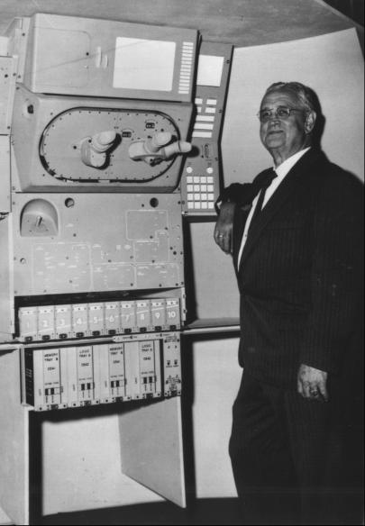
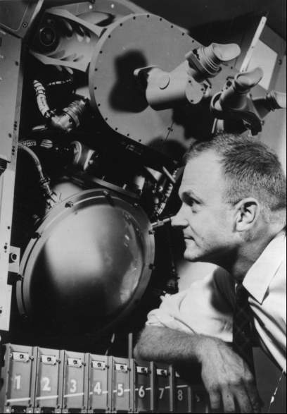

The guidance and navigation (or "G&N") system was a central concern in spacecraft design. To get to the moon and back to earth was a monumental task. NASA and its predecessor, NACA, had little experience in this field; but neither had anyone else. When NASA opened for business in 1958, more work had been done in celestial mechanics for trips to Mars than to the moon. MIT, in fact, had an Air Force contract that included research on interplanetary guidance and navigation. Out of this came a relatively extensive study for an unmanned probe to pass by and photograph Mars. By the time it was finished, however, this kind of role in space belonged exclusively to NASA.
With the blessing of the Air Force, MIT engineers took the results of their study to NASA Headquarters on 15 September 1959. Their timing was bad; only two days earlier the Russians had crash-landed Lunik II on the moon (the first man-made object to reach that body) and had impressed the American space community by having built a launch vehicle powerful enough and a guidance system sophisticated enough to get it there. In this atmosphere, the MIT presentation netted only a small study contract. And when feasibility contracts for the Apollo spacecraft were awarded in November 1960, how to get the crew to the moon and back was still a question.14
Like other phases of Apollo, the G&N system drew on the past. The foundation had been laid by Kepler, Newton, and Laplace in theoretical celestial mechanics and had been advanced as a practical science by such devices as Foucault's gyroscope (an instrument Sperry later made almost synonymous with his name). These and other achievements in aerial navigation and space guidance and control were not sufficient for a trip to the moon, although some engineers in the Apollo program did use the early classics in estimating fuel and developing computerized trajectory equations.15
To a great extent, lunar navigation development relied on such newcomers in the field as computers and a worldwide tracking and communications network. By the 1960s, the electronic computer had become an integral tool of science, technology, and business. Without its capacities for memorizing, calculating, comparing, and displaying astronomical amounts of data, the lunar landing program would have been impossible. Worldwide tracking and communications networks evolved out of meteorology, astronomy, telemetry, missilery, and automatic spacecraft experience into manned space flight planning and operations. Most of the credit for telecommunications work at NASA operations belongs to the Goddard center in Greenbelt, Maryland. Myriads of data collected from unmanned satellites were processed daily in its computer banks and transmitted to such agencies as the Weather Bureau and the Geological Survey. Guidance and control technology shared the same evolutionary roots as tracking and communications, but it also drew on advances in avionics, gyroscopics, maritime and aerial navigation, antisubmarine and antiaircraft fire control systems, and cybernetics.16
MIT was the obvious place for NASA to look for help in Apollo's astronavigation problems. For many years, Charles Stark Draper, Director of MIT's Instrumentation Laboratory, had been recognized as the man most directly responsible for the application of automatic pilots and inertial guidance systems.17 Achievements in such second-generation intercontinental ballistic missiles as the Polaris made Draper's laboratory the logical solesource choice for the Apollo system.

Navigating to the moon: MIT Instrumentation Laboratory Director C. Stark Draper inspects a mockup of the Apollo guidance and control system in the September 1963 photo above.

David G. Hoag, technical design director at the laboratory, examines the inertial measuring unit that would measure changes in Apollo spacecraft velocity when propulsion systems were fired.
Draper appointed Milton B. Trageser as project manager and David G. Hoag as technical director. These new Apollo leaders consulted with guidance theoreticians at Ames Research Center,* 18 before starting on the contract. Reassured by these talks and by the in-house MIT work of J. H. Lanning in 1958 on preliminary designs for a Mars mission and of J. S. Miller and Richard H. Battin in 1960 on studies of applied mathematics, Draper's laboratory was convinced that it had no near rivals in the field.19
When the MIT Instrumentation Laboratory signed a letter contract for Apollo on 10 August 1961, NASA officials assumed they had placed this complicated task in good hands. From the outset, there was a clear understanding that MIT would do only the technical design and prototype development; when the manufacturing phase commenced, industrial contractors would take over. NASA monitors anticipated some problems in employing separate firms to make the guidance, control, and navigation equipment - but that worry could wait. In the meantime, Draper's men were not completely sure that NASA people really understood the differences between the three terms.20
"Guidance," to MIT, meant directing the movement of a craft with particular reference to a selected path or trajectory. "Navigation," in space as on the seas, referred to determining present position, as accurately as possible, in relation to a future destination. "Control," specifically in astronautics, was the directing of a craft's movements with relation to its attitude (yaw, pitch, and roll) or velocity (speed and direction, a vector quantity). MIT's expertise centered on the first two of these factors; NASA engineers (particularly those who had worked with earth-orbital flight) emphasized the first and third.21
Still, NASA's Apollo engineers were encouraged by what they saw of the laboratory's work and were assured by MIT that getting to the moon and back was simpler than guiding an antiballistic missile or circumnavigating the earth under water in a nuclear submarine.**
NASA officials had some doubts. In June 1961, Dryden requested Draper to come to Washington to discuss G&N problems with Webb. Webb asked if MIT could really get a man to the moon and back safely. Draper replied that he would be willing to make the voyage himself, if Webb would guarantee the propulsion system. Over the next few months, Draper continued to hear mutterings of disbelief. To display his confidence in his team, he wrote Seamans, saying:
I would like to volunteer for service as a crew member on the Apollo mission to the moon. . . . We at the Instrumentation Laboratory are going full throttle on the Apollo guidance work, and I am sure that our endeavors will lead to success. . . . let me know what application blanks I should fill out. . . .22
Draper's offer to serve as an astronaut caused a ripple of laughter throughout NASA Headquarters, but only for a moment. There were other problems to resolve. The basic rocket booster for the moon mission was still in question, and NASA's administrators were in the process of selecting a spacecraft manufacturer.
* Before and during the Apollo feasibility studies, the Ames center had focused on guidance and navigation as the area where it could be most useful to Apollo. Stanley F. Schmidt had looked at midcourse guidance; Dean R. Chapman anti Rodney Wingrove had concentrated on reentry guidance; and G. Allan Smith had worked on instrumentation for the astronauts' onboard operations.
** On 10 May 1960, the U.S.S. Triton completed a 66,800-kilometer submerged cruise around the globe.
14. Richard H. Battin, interview, Cambridge, Mass., 29 April 1966; Jack Funk, interview, Houston, 25 June 1970; John W. Finney, "Washington Praises Shot; Hopes for Sharing of Data," New York Times, 14 Sept. 1959; "NASA Initiates Study on Impact of Space," Aviation Week & Space Technology, vol. 72 (1 Feb. 1960); Milton B. Trageser, interview, Cambridge, 27 April 1966; Stanley F. Schmidt to Harry J. Goett, 9 June 1961; Goett to Silverstein, 16 June 1961; Piland to Assoc. Dir., STG, "Possible MIT Guidance and Control Study for Apollo," 4 Nov. 1960; Piland note to Donlan, "Apollo activities," 9 Nov. 1960; Robert G. Chilton to Assoc. Dir., STG, "Meeting with MIT Instrumentation Laboratory to Discuss Navigation and Guidance Support for Project Apollo," 28 Nov. 1960; Trageser to Donlan, 2 Dec. 1960, and 22 Dec. 1960, with encs., "Technical Proposal to NASA . . . Space Task Group, for a Guidance and Navigation System Study for Project Apollo," 23 Dec. 1960, and "Cost Proposal to . . . Space Task Group, for a Guidance and Navigation System Study for Project Apollo," 23 Dec. 1960; Chilton to Assoc. Dir., STG, "Massachusetts Institute of Technology Guidance System Study for Apollo," 16 Jan. 19-61; Piland, "Apollo Programming - January 1961," n.d.; Chilton to Assoc. Dir., STG, "Visit to Massachusetts Institute of Technology Instrumentation Laboratory, March 23, 24, 1961," 3 April 1964.
15. Thomas P. Hughes, Elmer Sperry: Inventor and Engineer (Baltimore: Johns Hopkins Press, 1971); Funk and Trageser interviews.
16. William R. Corliss, Histories of the Space Tracking and Data Acquisition Network (STADAN), the Manned Space Flight Network (MSFN), and the NASA Communications Network (NASCOM), NASA CR-140390, June 1974.
17. C. S. Draper, "The Evolution of Aerospace Guidance Technology at the Massachusetts Institute of Technology, 1935–1951," paper presented at the 5th IAA History Symposium, Brussels, Belgium, 19–25 Sept. 1971; Vannevar Bush, Pieces of the Action (New York: William Morrow, 1970), p. 170. See also background and brief history of Draper in C. Stark Draper, Walter Wrigley, and John Havorka, Inertial Guidance (New York: Pergamon Press, 1960), pp. 14-23.
18. Chilton to Assoc. Dir., STG, 3 April 1961; Schmidt to Goett, 9 June 1961; Goett to Silverstein, 16 June 1961.
19. Richard H. Battin, Astronautical Guidance (New York: McGraw-Hill, 1964).
20. David W. Gilbert, "A Historical Description of the Apollo Guidance and Navigation System Development," SG-100-153, 31 Dec. 1963, with encs.; William W. Petynia to Assoc. Dir., STG, "Visit to MIT, Instrumentation Laboratory on September 12–13, regarding Apollo Navigation and Guidance Contract," 21 Sept. 1961; idem, "Second Apollo monthly meeting at MIT, Instrumentation Laboratory, on October 4, 1961," 10 Oct. 1961.
21. Milton B. Trageser and David G. Hoag, "Apollo Spacecraft Guidance System," MIT-IL Rept. R-495, paper presented at the IFAC Symposium on Automatic Control in the Peaceful Uses of Space, Stavanger, Norway, June 1965; Richard H. Battin, "Apollo NGC in the Journals," Astronautics & Aeronautics 9 (January 1971): 22-23; Robert G. Chilton, "Apollo Spacecraft Control Systems," in John A. Aseltine, ed., Peaceful Uses of Automation in Outer Space (New York: Plenum Press, 1966); Aaron Cohen, "Powered Flight Steering and Control of Apollo Spacecraft," paper presented to Northrop Nortronics Society of Automotive Engineers Committee, Houston, 11–13 Dec. 1963.
22. Draper, interviews, Cambridge, 23 April 1968, and Houston, 27 Aug. 1973; Draper to Seamans, 21 Nov. 1961; Eugene M. Emme, Aeronautics and Astronautics: An American Chronology of Science and Technology in the Exploration of Space, 1915–1960 (Washington: NASA, 1961), p. 123.